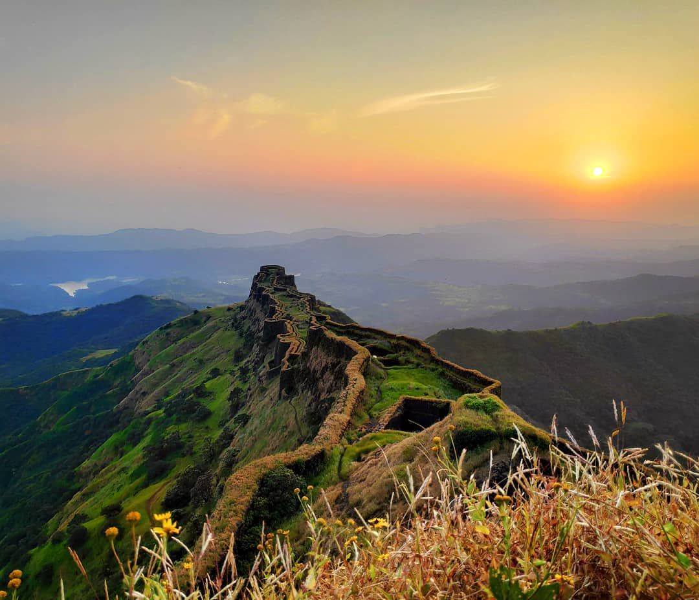

<div class="container">
    <div class="row">
        <div class="col-md-12">
            <body>
                <div class="container py-5">
                  <div class="jumbotron text-white jumbotron-image shadow" style="background-image: url(https://images.unsplash.com/photo-1552152974-19b9caf99137?fit=crop&w=1350&q=80);">
                    <h2 class="mb-4">
                      Welcome To Maharashtra...
                    </h2>
                    <p class="mb-4">
                      Expore the Great Amazing places and the rich heritage of Maharashtra
                    </p>
                  </div>
                </div>
              </body> 

              <div class="row row-cols-2 row-cols-md-3 g-4">
                <div class="col">
                  <div class="card">
                    
                    <div class="card-body">
                      <h5 class="card-title">Temples</h5>
                      <p class="card-text">Take your family along for a temple trip in Maharashtra and seek blessings of many deities.
                         Shirdi. Located at a distance of 258 km from Mumbai.
                          Ganpatipule,Bhimashankar Temple.</p>
                      <a href="temples" class="btn btn-primary">Check it Now !</a>
                    </div>
                  </div>
                </div>
                <div class="col">
                  <div class="card">
                    
                    <div class="card-body">
                      <h5 class="card-title">Beaches and More..</h5>
                      <p class="card-text">Take your family to lovely Beach ride in Maharashtra and seek the wonders of the sea and spent the quality vacation,
                        At Dapoli beach, Murud Beach, Tarkarli, and many more
                      </p>
                      <a href="beach" class="btn btn-primary">Check it Now !</a>
                    </div>
                  </div>
                </div>
                <div class="col">
                  <div class="card">
                    
                    <div class="card-body">
                      <h5 class="card-title">Forts and Treks..</h5>
                      <p class="card-text">Seeking For Adventure and Treks? The Maharashtra is one of the most womderful place to visit
                        Take your ride to the amazing forts, know there history and adventures of it.
                      </p>
                      <a href="forts" class="btn btn-primary">Check it Now !</a>
                    </div>
                  </div>
                </div>
                <div class="col">
                  <div class="card mt-4">
                    
                    <div class="card-body">
                      <h5 class="card-title">Hill-Stations</h5>
                      <p class="card-text">We the people of Maharashtra are indeed very fortunate in this sense. 
                        The Western Ghats and their Sahyadri Ranges have blessed Maharashtra with many a charismatic and charming hill stations.
                        And the best part is we are bound to find one, within a few hours driving distance from almost all the major cities in the state. So whether we are looking for a weekend family getaway, a much needed rendezvous with blissful nature,
                         or that long-overdue romantic long drive…. Mountains are calling!</p>
                      <a href="hill-station" class="btn btn-primary">Check it Now !</a>
                    </div>
                  </div>
                </div>
                <div class="col">
                    <div class="card mt-4">
                      
                      <div class="card-body">
                        <h5 class="card-title">Wild-life Sanctuary..</h5>
                        <p class="card-text">Maharashtra is home to many wildlife sanctuaries and national parks.
                           These national parks and sanctuaries are home to many rare species of flora and fauna. 
                           Thanks to the state government, these parks are well safeguarded and try to upgrade with every year to attract foreign and domestic tourists.
                        </p>
                        <a href="wild-life-sanctuary" class="btn btn-primary">Check it Now !</a>
                      </div>
                    </div>
                  </div>
                  <div class="col">
                    <div class="card mt-4">
                      
                      <div class="card-body">
                        <h5 class="card-title">Festivals and Culture..</h5>
                        <p class="card-text">As Maharashtra is a vast state, the people of this colourful state wears different types of costumes, 
                          take different cuisines, has different forms of dances and music according to the physical features of their locality. 
                          Generally, men wear dhoti and pheta in olden days, while women wear choli and saree. 
                          But with the change of time,young Maharashtrians too are fast attracting to the latest fashions imported from the western countries.</p>
                        <a href="culture-and-festivals" class="btn btn-primary">Check it Now !</a>
                      </div>
                    </div>
                  </div>
              </div>
              
        </div>
    </div>
</div>